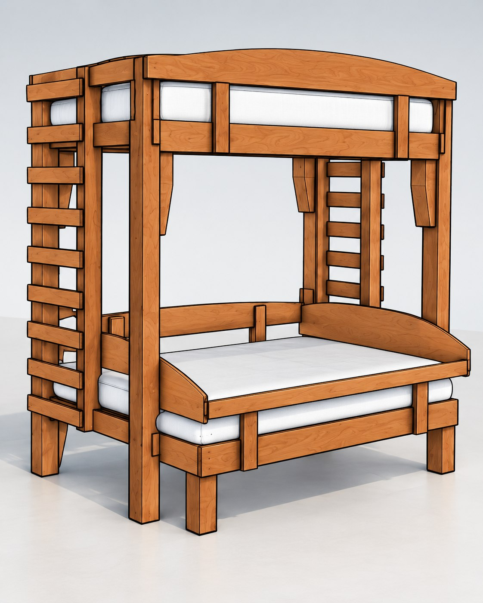
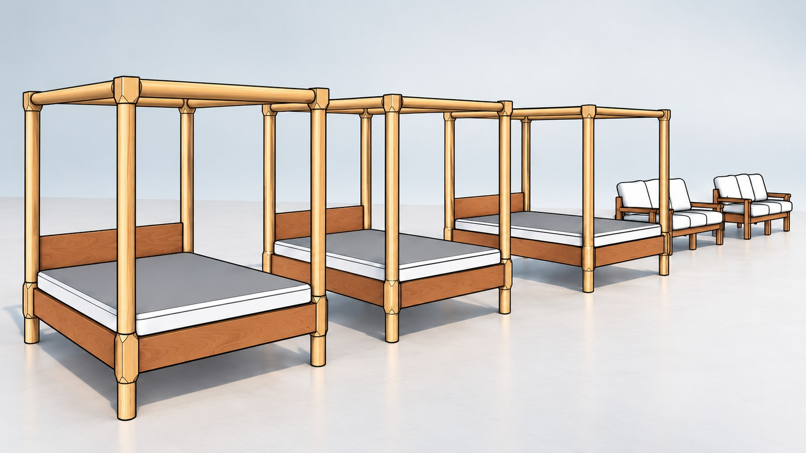
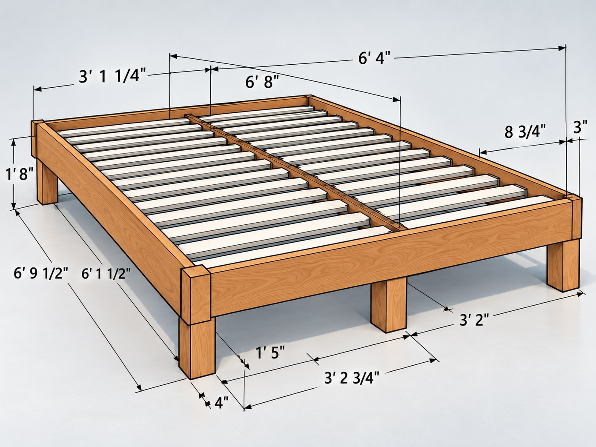

Design & Making
3D Design & Fabrication Planning
Using 3D models to make dimensions, layouts and practical build decisions easier to see, discuss and refine.
Featured design
See the space and its proportions together.
The kitchen model brings wall cabinets, work surfaces, a sink and an island into one measured view. The dimensional callouts make the relationships between those elements easier to understand before materials are cut or components are installed.
This is a design presentation, not a substitute for verified site measurements or final fabrication drawings.
How I approach planning
Make the important decisions visible early.
- Understand the space: gather available measurements, reference images, practical constraints and the intended use.
- Explore the layout: visualize how furniture, cabinets or other components fit and relate to one another.
- Review proportions and access: use model views to discuss clearances, usability and possible adjustments.
- Plan the next step: where included in the scope, develop component information, material estimates or fabrication guidance from a reviewed design.
More modelling work
Furniture studies and dimensional concepts.
These design views show how different structures and proportions can be explored before moving into production decisions.



From design to delivery
Visual planning is one part of a practical build.
When a project moves beyond modelling, I can help translate the chosen direction into a defined fabrication scope. The details depend on the project, available measurements, materials and equipment.
For an example of a completed physical build, see my Modular Platform Bed case study, covering fabrication planning, adaptation, transport and installation.